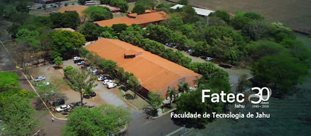
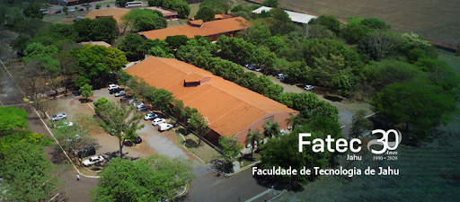

A Faculdade
A Faculdade de Tecnologia de Jahu - FATEC-JAHU é uma Instituição Pública de Ensino Superior que
oferece cursos
de graduação para formação de Tecnólogos, visando atender segmentos atuais e emergentes da atividade econômica.
Missão: Promover a formação de cidadãos e profissionais altamente qualificados capazes de
desenvolver a sociedade em todos os seus aspectos.
Visão: Através do ensino, pesquisa e extensão, ser reconhecida pela comunidade científica e
sociedade em geral, como um Centro de referência Tecnológica.
Valores: Contribuir na formação de cidadãos e profissionais que tenham consciência ética,
competência, responsabilidade e compromisso social.
Ela pertence ao Centro Estadual de Educação Tecnológica “Paula Souza”, uma autarquia estadual ligada à
Secretaria de Ciência, Tecnologia e Inovação.
O Centro Paula Souza administra 224 Escolas Técnicas Estaduais (ETECs) e 76 Faculdades de Tecnologia (FATECs) no
Estado de São Paulo.
A Faculdade de Tecnologia de Jahu foi criada pelo Decreto n.º 31.255, de 23 de fevereiro de 1990, retificado por
publicação do D.O.E. de 01/03/1990. Pelo Decreto n.º 39.471, de 07 de novembro de 1994, foi dada nova redação a
dispositivo que especifica do Decreto 31.255, de 23 de fevereiro de 1990.
Está localizada no Município de Jaú, à Rua Frei Galvão, s/n.º, no Bairro Jardim Pedro Ometto. CEP: 17212-599.
Contatos:
Email: f020dir@cps.sp.gov.br
Tel: (14) 3622-8280 / 3622-8037 / 3621-9044

 
